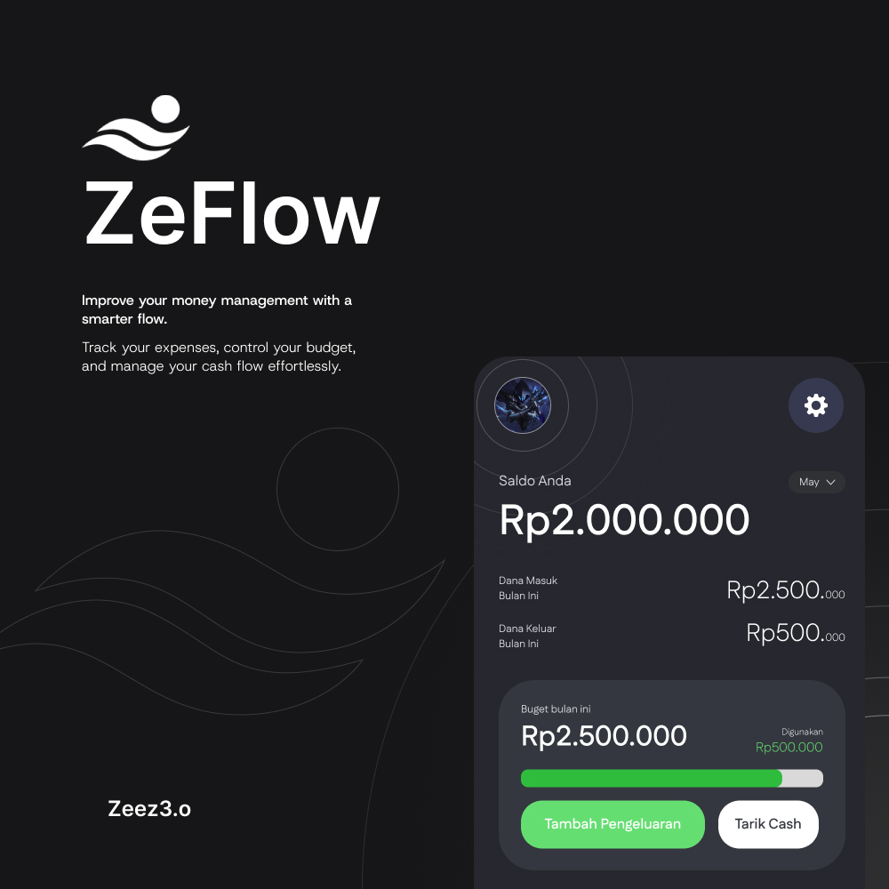
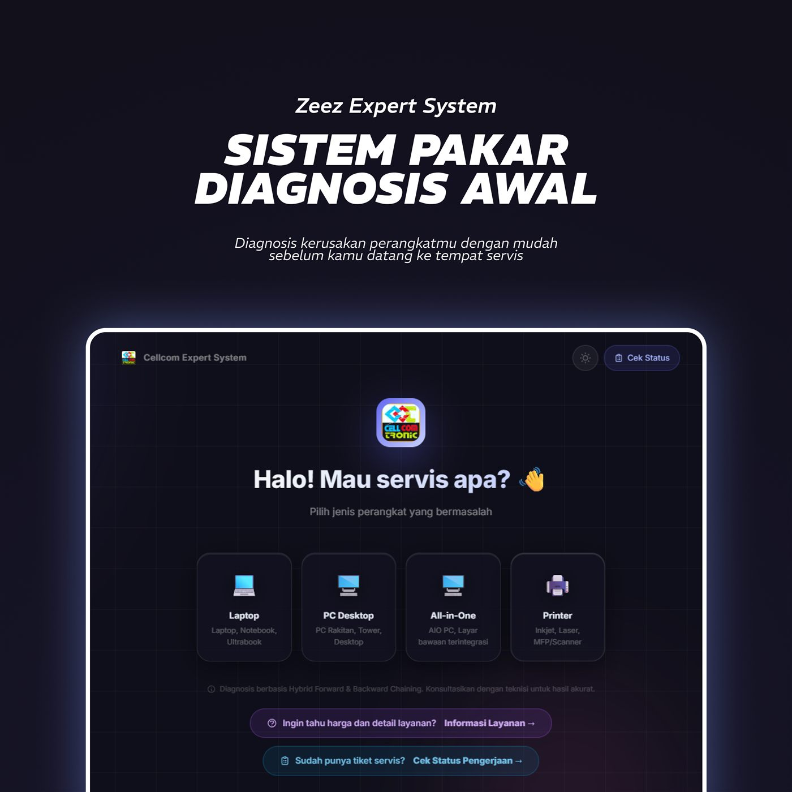
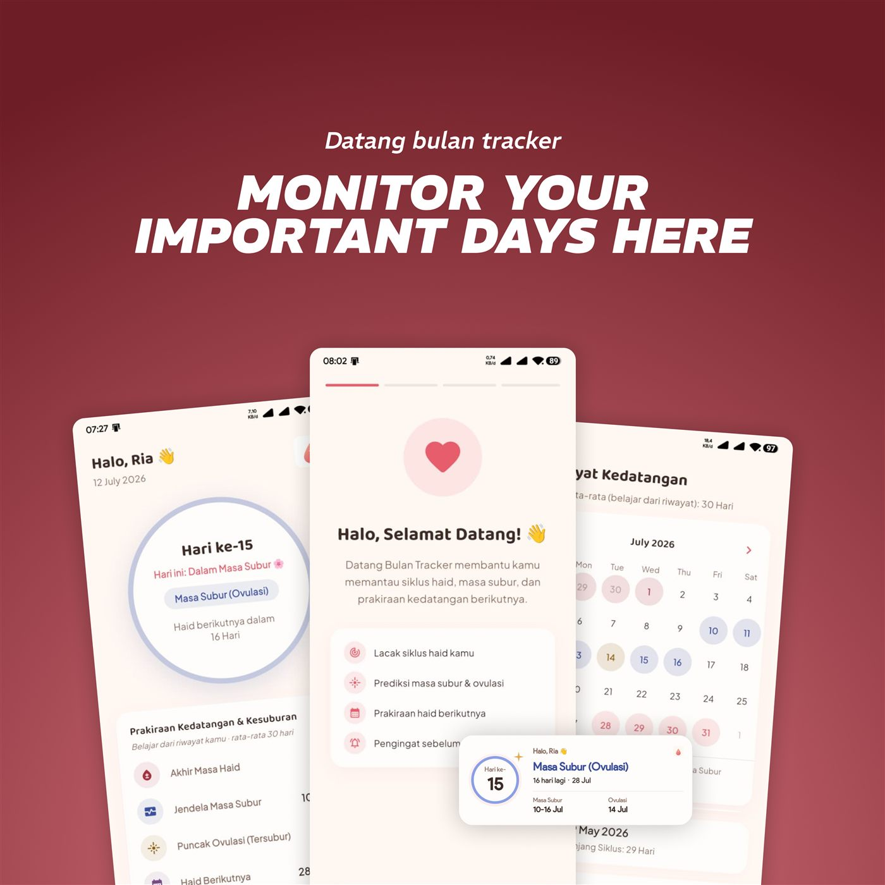

UI/UX Design
Merancang alur dan antarmuka yang jelas, teruji, dan enak dipakai.
Terbuka untuk Peluang Kerja
UI/UX Designer & Front-end Web Developer
Setiap produk yang hebat selalu dimulai dengan satu pertanyaan sederhana: "Bagaimana jika dibuat lebih baik?".
Perjalanan saya dimulai dari dunia visual — lulusan SMK Multimedia yang sempat bekerja sebagai Editor dan Kameramen di sebuah stasiun televisi lokal. Dari sana saya belajar bagaimana komposisi, gambar, dan cerita membentuk persepsi orang dalam hitungan detik. Ketertarikan itu membawa saya ke UI/UX Design dan Front-end Web Development saat kuliah Teknik Informatika, bidang yang saya tekuni lewat berbagai kompetisi nasional bersama tim.
Saya percaya latar belakang visual ini jadi modal tersendiri — desainer yang paham gambar akan paham antarmuka. Sekarang saya sedang memperluas kemampuan ke pengembangan aplikasi mobile dengan Flutter, karena desainer yang memahami cara kerja implementasinya akan selalu menghasilkan keputusan desain yang lebih baik.
Tiga disiplin, satu cara berpikir yang sama: presisi dari ide sampai eksekusi.
Merancang alur dan antarmuka yang jelas, teruji, dan enak dipakai.
Menerjemahkan desain jadi kode yang rapi — dari tampilan sampai basis data.
Bekal profesional dari dunia broadcast — mengenal gambar sebelum mendesain layar.
Memperluas kemampuan desain ke pengalaman native di Android.
Perjalanan singkat — dari ruang kelas ke studio kerja sungguhan.
Universitas Palangka Raya
Dinas Kominfo Kabupaten Katingan
PT. Shinta Buana Vision (SBTV), Pangkalan Bun
PT. Shinta Buana Vision (SBTV), Pangkalan Bun
SMK Muhammadiyah Pangkalan Bun
Rekam jejak dari kompetisi teknologi tingkat nasional, sebagai UI/UX Designer dalam tim.
Kategori E-Government Tech — berkolaborasi dalam tim sebagai UI/UX Designer.
Desain aplikasi "Quranku" — berperan sebagai UI/UX Designer dalam tim.
Kategori Pengembangan Perangkat Lunak — berperan sebagai UI/UX Designer dalam tim.
Studi kasus nyata dari kompetisi, magang, dan eksplorasi pribadi.

Aplikasi pencatatan pengeluaran dan manajemen keuangan pribadi — mencatat pemasukan, pengeluaran, dan anggaran bulanan, dengan notifikasi bank yang otomatis mencatat setiap transaksi. Dirancang dan dibangun sendiri dengan Flutter.

Sistem pakar diagnosis awal kerusakan laptop, PC, dan printer menggunakan algoritma Hybrid Forward & Backward Chaining, untuk brand Cellcom Tronic.

Aplikasi Flutter untuk melacak siklus haid, masa subur, dan prakiraan kedatangan bulan berikutnya.
Sedang mencari UI/UX Designer atau Front-end Developer? Saya siap ngobrol.
budiaat25@gmail.com